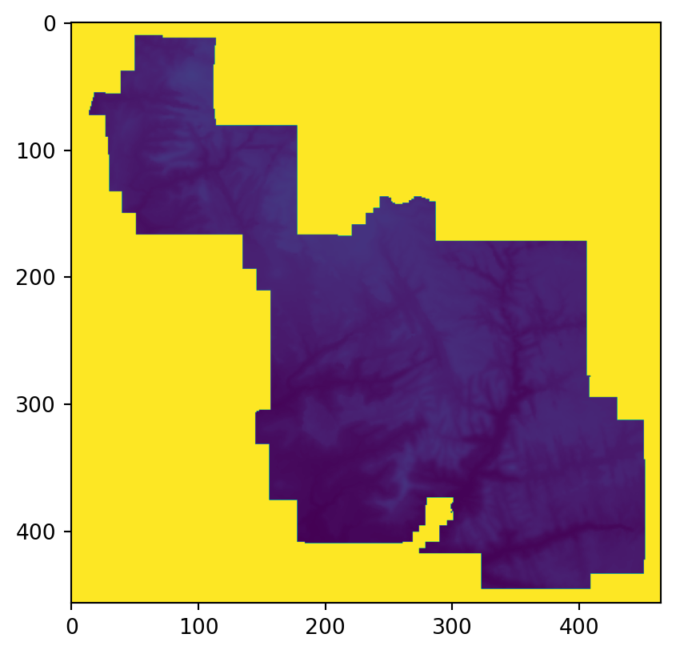
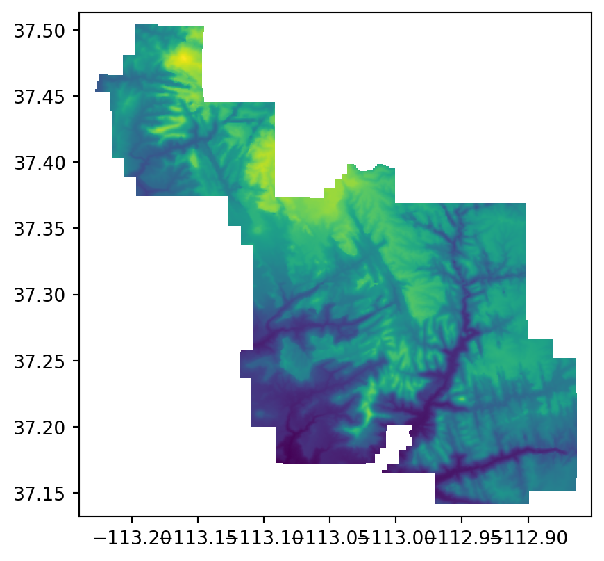
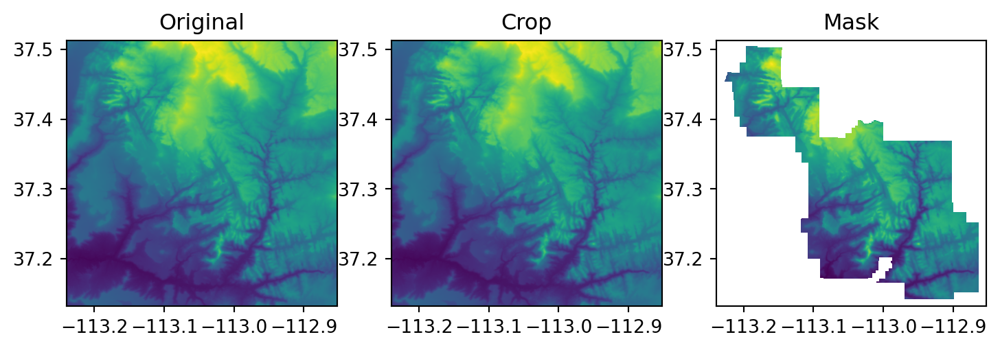

import pandas as pd
import matplotlib.pyplot as plt
pd.set_option("display.max_rows", 4)
pd.set_option("display.max_columns", 6)
pd.options.display.max_rows = 10
pd.options.display.max_columns = 6
pd.options.display.max_colwidth = 35
plt.rcParams["figure.figsize"] = (5, 5)6 Raster-vector interactions
6.1 Prerequisites
Packages…
import numpy as np
import geopandas as gpd
import rasterio
import rasterio.mask
from rasterio.plot import showSample data…
src = rasterio.open("data/srtm.tif")
pol = gpd.read_file("data/zion.gpkg")6.2 Introduction
6.3 Raster cropping
pol = pol.to_crs(src.crs)out_image, out_transform = rasterio.mask.mask(src, pol.geometry, crop = False, nodata = 9999)show(out_image)
<AxesSubplot:>meta = src.meta
meta.update(height = out_image[0].shape[0])
meta.update(width = out_image[0].shape[1])
meta.update(transform = out_transform)
meta.update(nodata = 9999)
meta{'driver': 'GTiff',
'dtype': 'uint16',
'nodata': 9999,
'width': 465,
'height': 457,
'count': 1,
'crs': CRS.from_epsg(4326),
'transform': Affine(0.0008333333332777796, 0.0, -113.23958321278403,
0.0, -0.0008333333332777843, 37.512916763165805)}new_dataset = rasterio.open("output/srtm_cropped.tif", "w", **meta)
new_dataset.write(out_image)
new_dataset.close()src2 = rasterio.open("output/srtm_cropped.tif")
show(src2)
<AxesSubplot:>src2.meta{'driver': 'GTiff',
'dtype': 'uint16',
'nodata': 9999.0,
'width': 465,
'height': 457,
'count': 1,
'crs': CRS.from_epsg(4326),
'transform': Affine(0.0008333333332777796, 0.0, -113.23958321278403,
0.0, -0.0008333333332777843, 37.512916763165805)}src2.read()array([[[9999, 9999, 9999, ..., 9999, 9999, 9999],
[9999, 9999, 9999, ..., 9999, 9999, 9999],
[9999, 9999, 9999, ..., 9999, 9999, 9999],
...,
[9999, 9999, 9999, ..., 9999, 9999, 9999],
[9999, 9999, 9999, ..., 9999, 9999, 9999],
[9999, 9999, 9999, ..., 9999, 9999, 9999]]], dtype=uint16)Plot…
fig, axes = plt.subplots(ncols=3, figsize=(9,5))
show(src, ax=axes[0])
show(src, ax=axes[1])
show(src2, ax=axes[2])
axes[0].set_title("Original")
axes[1].set_title("Crop")
axes[2].set_title("Mask");
6.4 Raster extraction
6.5 Rasterization
6.6 Spatial vectorization
src = rasterio.open("data/grain.tif")